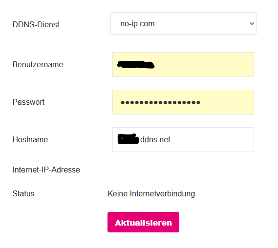
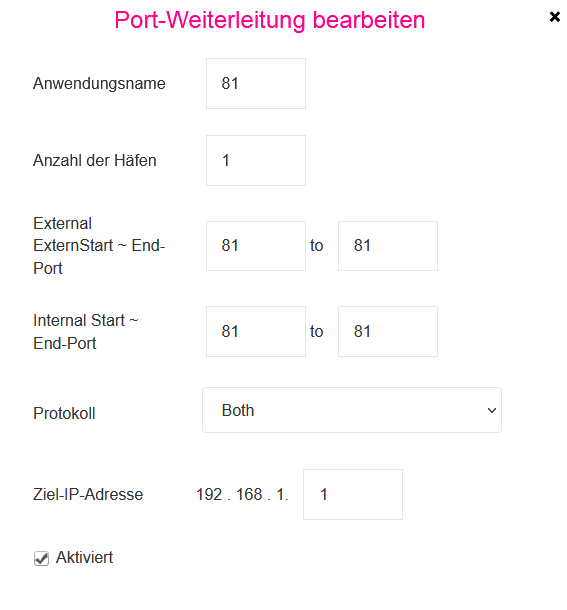

No-IP DDNS auf Magenta 5G Box Outdoor und Indoor Router - Bitte um Hilfe!
IK66
Hallo Leute,
ich hatte damals mein Internet bei A1 auf einem Hybrid Router und dort ging mein DDNS von no-ip ohne Probleme. Nach der Portweiterleitung hat alles funktioniert.
Bei meiner Magenta 5G Outdoor + Inside Box kann ich keine Verbindung herstellen:

Vielleicht habe ich auch die Portweiterleitung falsch eingestellt.. bei Magenta ist die etwas komisch meiner Meinung nach (kenne ich so nicht). Wie stelle ich diese richtig ein? Was ist hier die Ziel-IP? Die IP-Adresse vom Router?

(192.168.1.1 ist der Inside Router)
IP-Adressen von Magenta (whatsyourip) und no-ip sind ident. Habe ich aktualisiert.
Ich habe mit 2 Rechnern und einem Laptop versucht auf die ODU zuzugreifen (192.168.0.1), keine Verbindung möglich. Auch nach unzähligen Versuchen, etlichen ODU Resets und Deaktivierung sämtlicher Firewalls und sonstigen Schutzmechanismen. Die ODU hat nachgewiesen 192.168.0.1
Leider ist die Hardware nicht ausgereift. In 30 Jahren Hardware Erfahrung habe ich solche Sachen noch nicht oft erlebt....
Positiv: Die 5G Speed ist sehr gut! Komme auf 300-450 Mbit/s
Was ich möchte? Die ODU in den Bridge Modus bringen / DynDNS zum Laufen bringen / der ODU eine andere Adresse zuweisen können.
Bearbeitet
von Robert T.
Ergänzung Bild
Robert T.
der Zugriff auf die ODU klappt mit einem https:// davor. Einfach die IP nimmt er nicht...
Da es mit den DDNS ja nicht klappt, habe ich mir eine statische IP dazu genommen. Aber welch Wunder: Auch hier gibt es keine Erreichbarkeit. Die ODU blockt fast alles....
IK66
vor 6 Stunden schrieb Robert T.:
der Zugriff auf die ODU klappt mit einem https:// davor. Einfach die IP nimmt er nicht...
Da es mit den DDNS ja nicht klappt, habe ich mir eine statische IP dazu genommen. Aber welch Wunder: Auch hier gibt es keine Erreichbarkeit. Die ODU blockt fast alles....
Hallo Robert, wie bist du in den Bridgemodus gekommen? Wie hast du diesen eingestellt?
Bei mir sind jetzt zwei Profile, jedoch bleibt er immer im PDN-Profil PDN1... oder ist das egal?
Robert T.
vor 14 Minuten schrieb IK66:
Hallo Robert, wie bist du in den Bridgemodus gekommen? Wie hast du diesen eingestellt?
Bei mir sind jetzt zwei Profile, jedoch bleibt er immer im PDN-Profil PDN1... oder ist das egal?
Leider habe ich keine Ahnung. Mir geht es wie dir. Man sieht auch nicht welches Profil aktiv ist. Obwohl der Speed ein Traum ist, werde ich wahrscheinlich vom Vertrag zurücktreten da die Hardware leider unausgereift ist.
Schade, bin besseres von Magenta gewöhnt. 😟
IK66
vor 39 Minuten schrieb Robert T.:
Leider habe ich keine Ahnung. Mir geht es wie dir. Man sieht auch nicht welches Profil aktiv ist. Obwohl der Speed ein Traum ist, werde ich wahrscheinlich vom Vertrag zurücktreten da die Hardware leider unausgereift ist.
Schade, bin besseres von Magenta gewöhnt. 😟
Also ehrlich gesagt finde ich, dass ist eine Frechheit.
Wenn ich den Bridgemodus aktiv habe, dann bin ich nur noch local unterwegs und komme nicht mehr ins Internet. Da muss irgendwas falsch sein.
Ich habe beim Support angerufen, dort kennen sich die Techniker auch nicht aus. Man kann eine fixe IP-Adresse nehmen, die kostet jedoch 4,99€ pro Monat. Nächste Frechheit.
Im anderen Thread hat
@gschwandtner
gemeint, dass es bei ihm geklappt hat. Könntest du eine Anleitung machen, wie man das macht?
Ansonsten hab ich keine Ahnung mehr.
Robert T.
vor 7 Minuten schrieb IK66:
Also ehrlich gesagt finde ich, dass ist eine Frechheit.
Wenn ich den Bridgemodus aktiv habe, dann bin ich nur noch local unterwegs und komme nicht mehr ins Internet. Da muss irgendwas falsch sein.
Ich habe beim Support angerufen, dort kennen sich die Techniker auch nicht aus. Man kann eine fixe IP-Adresse nehmen, die kostet jedoch 4,99€ pro Monat. Nächste Frechheit.
Im anderen Thread hat
@gschwandtner
gemeint, dass es bei ihm geklappt hat. Könntest du eine Anleitung machen, wie man das macht?
Ansonsten hab ich keine Ahnung mehr.
Ich habe eine statische IP. Bringt aber nichts, da ich auch die nicht erreiche. Gleiches Problem wie mit einem DDNS.
Und du hast recht, die Techniker an der Hotline sind mit sowas schwer überfordert.
IK66
vor 9 Minuten schrieb Robert T.:
Ich habe eine statische IP. Bringt aber nichts, da ich auch die nicht erreiche. Gleiches Problem wie mit einem DDNS.
Und du hast recht, die Techniker an der Hotline sind mit sowas schwer überfordert.
Ja statische IP wird hier glaub ich nichts nutzen, da diese im Netzwerk ja dann nur statisch ist, oder? Das Außengerät bekommt die IP-Adresse von Magenta, jedoch ist der Router dann auf der 192er (private) IP, die mir aber fürs DDNS nichts bringt. Nach dem Bridgemodus, krieg ich zwar eine andere IP-Adresse, jedoch funktioniert nichts mehr... Ich denke, hier ist irgendwo der Hacken...
Bist du im Bridgemodus auch unerreichbar von außerhalb?
Robert T.
Am 10.1.2022 um 20:52 schrieb IK66:
Ja statische IP wird hier glaub ich nichts nutzen, da diese im Netzwerk ja dann nur statisch ist, oder? Das Außengerät bekommt die IP-Adresse von Magenta, jedoch ist der Router dann auf der 192er (private) IP, die mir aber fürs DDNS nichts bringt. Nach dem Bridgemodus, krieg ich zwar eine andere IP-Adresse, jedoch funktioniert nichts mehr... Ich denke, hier ist irgendwo der Hacken...
Bist du im Bridgemodus auch unerreichbar von außerhalb?
Abgesehen das ich nicht sehen kann welches PDN Profil aktiv ist, bin ich nicht erreichbar von außerhalb.
HollaM
Wenn der Bridgemode nicht funktioniert dann müsste die Portweiterleitung zusätzlich auf der Outdoor Einheit konfiguriert werden (wenn möglich).
GBE
Hallo
Ich möchte das Problem nochmal aufgreifen.
Gibt es mittlerweilen jemanden bei dem das DDNS bei einer 5G Box Outdoor funktioniert?
Ich habe mal zustandegebracht das ich mit meiner no-ip von außen auf meine interne Hardware zugreifen kann.
Allerdings nur wenn ich die IP Adresse der ODU auf der Homepage von no-ip händisch eintrage.
Was nicht funktioniert ist eine automatische Aktualisierung bei einer Neuvergabe der IP in der ODU.
Kann da jemand weiterhelfen?
Jonathan Dorian
Am 14.12.2023 um 21:25 schrieb GBE:
Kann da jemand weiterhelfen?
Hallo,
nach meinen Recherchen funktioniert DDNS bei der Magenta 5G Box Outdoor derzeit noch nicht zuverlässig. Es gibt Berichte von Nutzern, bei denen DDNS zwar funktioniert, jedoch nur dann, wenn die IP-Adresse der ODU unverändert bleibt. Bei einer Neuvergabe der IP-Adresse durch die ODU wird der DDNS-Eintrag nicht aktualisiert, wodurch der externe Zugriff auf die interne Hardware nicht mehr möglich ist.
Magenta hat das Problem bisher noch nicht behoben. Es besteht die Möglichkeit, dass das Problem in einem zukünftigen Firmware-Update gelöst wird.
Um das DDNS-Problem zu umgehen, könntest du folgende Möglichkeiten in Betracht ziehen:
- Verwende einen DDNS-Dienst, der eine feste IP-Adresse für die 5G Box Outdoor bereitstellt. Beachte jedoch, dass dies in der Regel mit monatlichen Kosten verbunden ist.
- Nutze einen VPN-Dienst, um von außen auf deine interne Hardware zuzugreifen. Dies ist eine kostenfreie Option, kann jedoch die Leistung beeinträchtigen.
Wenn du dich für die Verwendung eines DDNS-Dienstes entscheidest, musst du die IP-Adresse der ODU auf der Website des Dienstleisters eingeben. Bei Änderungen der IP-Adresse der ODU musst du die Adresse manuell auf der Website des Dienstleisters aktualisieren.
Bei der Verwendung eines VPN-Dienstes musst du einen VPN-Client auf deinem Computer oder Smartphone installieren. Nach der Verbindung mit dem VPN-Server werden deine Daten verschlüsselt und über den VPN-Server an dein Heimnetzwerk weitergeleitet. Dadurch kannst du von außen auf deine interne Hardware zugreifen, als wärst du im Heimnetzwerk.
Ich hoffe, diese Informationen helfen dir weiter.
LG JD.
GBE
Hallo Jonathan
Vielen Dank für deine Antwort.
Ich habe heute mal bei Magenta in der technischen Abteilung nachgefragt, die haben aber keine Ahnung von diesesm Problem.
Laut Mitarbeiter gibt es für das DDNS keine Unterstützung.
Er meinte ich soll mich in der Community schlau machen vielleicht gibt es da eine Lösung. Er kann mir nicht helfen.
Meinst du Magenta weiß von diesesm Problem und arbeitet an einer Lösung?
Gibt es so wenig Leute die mit DDNS arbeiten?
Das mit der manuellen Eingabe auf der No-ip Homepage habe ich gemacht, das funktioniert.
Das Problem ist wenn ich länger auswärts bin, und es ändert sich die IP, kann ich diese nicht händisch eintragen, weil unbekannt.
Das mit der VPN muss ich mir erst ansehen wie das funktioniert.
Wird hierfür die exteren IP nicht benötigt?
LG Gerhard
Jonathan Dorian
Am 20.12.2023 um 14:48 schrieb GBE:
Meinst du Magenta weiß von diesesm Problem und arbeitet an einer Lösung?
Gibt es so wenig Leute die mit DDNS arbeiten?
Es ist möglich, dass Magenta von dem Problem weiß und an einer Lösung arbeitet. Die Anzahl der Leute, die mit DDNS arbeiten, ist schwer zu bestimmen. Es gibt sicherlich einige, aber es ist nicht so verbreitet wie andere Internetdienste.
Am 20.12.2023 um 14:48 schrieb GBE:
Das mit der VPN muss ich mir erst ansehen wie das funktioniert.
Wird hierfür die exteren IP nicht benötigt?
Die Antwort auf deine Frage, ob für das VPN eine externe IP benötigt wird, lautet ja. Das VPN benötigt eine öffentliche IP-Adresse, um deine Verbindung zum Internet zu ermöglichen. Wenn du eine dynamische IP-Adresse hast, musst du diese der VPN-Software mitteilen. Die VPN-Software wird dann diese IP-Adresse verwenden, um eine Verbindung zum VPN-Server herzustellen.
Ich hoffe, diese Informationen helfen dir weiter.
LG JD.
GBE
Danke für deine Antworten.
Also ist es im Prinzip egal ob ddns oder VPN, für beide wird die Info der externen IP benötigt.